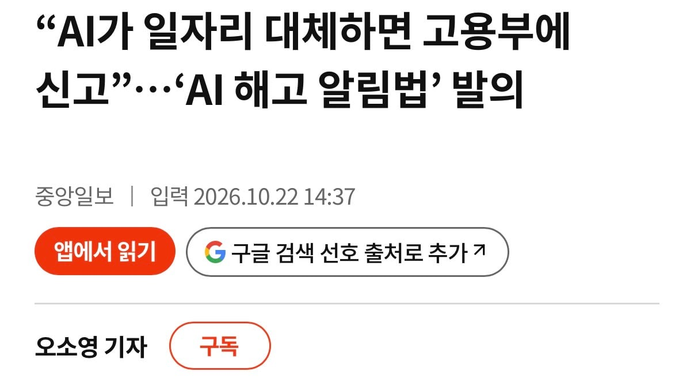
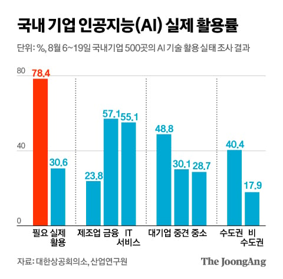

현재 기업들의 AI 활용률은 점점 높아지고 있고, AI가 필요하다고 응답한 수치는 80%에 육박함
사무직은 이미 50% 가까이 AI 활용중임
이미 신입채용 안하는 식으로 고용에 영향 미치고 있기는 한데, 조만간 AI로 인한 대량해고가 현실화 될거라고 보고 있다고 함
그래서 AI로 해고하면 그래서 고용부에 의무적으로 신고하게 만들거라고 함. 그에 맞춰 사회적 충격 대비하기 위해서
진짜로 AI가 인간 대체하는 날이 곧 오는건가…?
이제 외국인 밀어내고 기술직 해야지.. 그것도 얼마 안남은것같긴한데